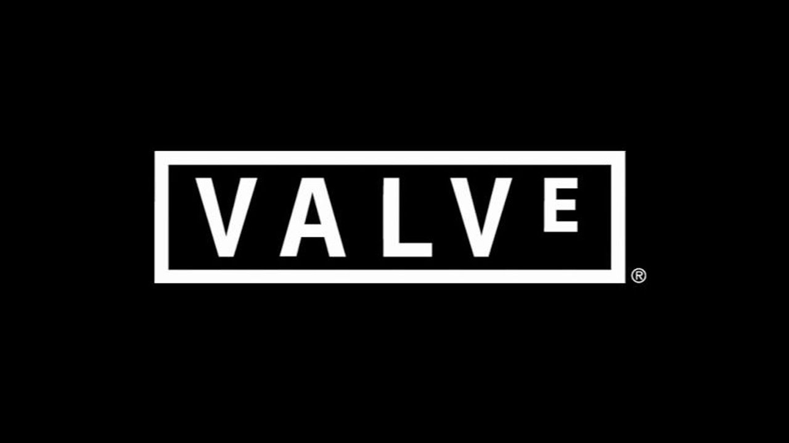
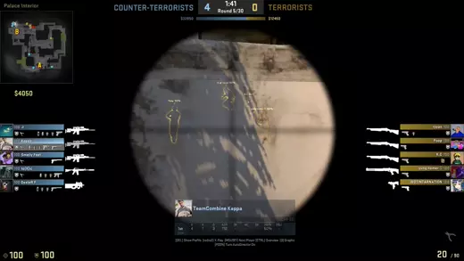
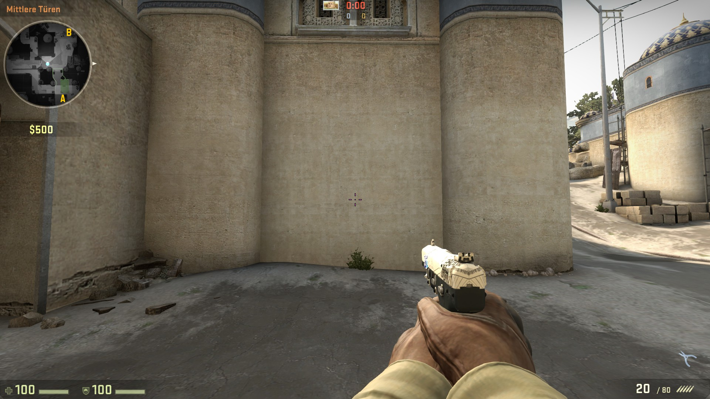
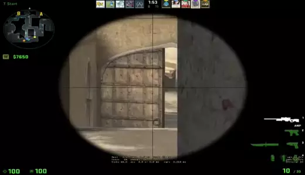
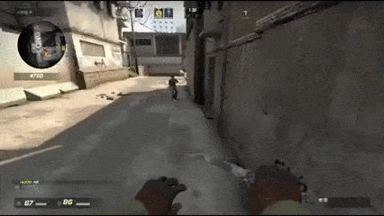
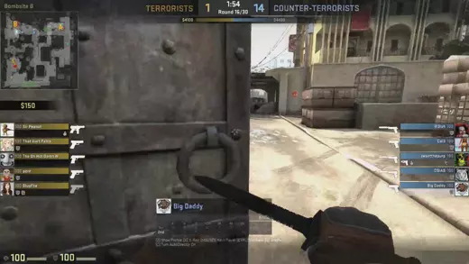
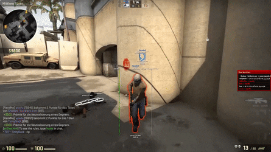
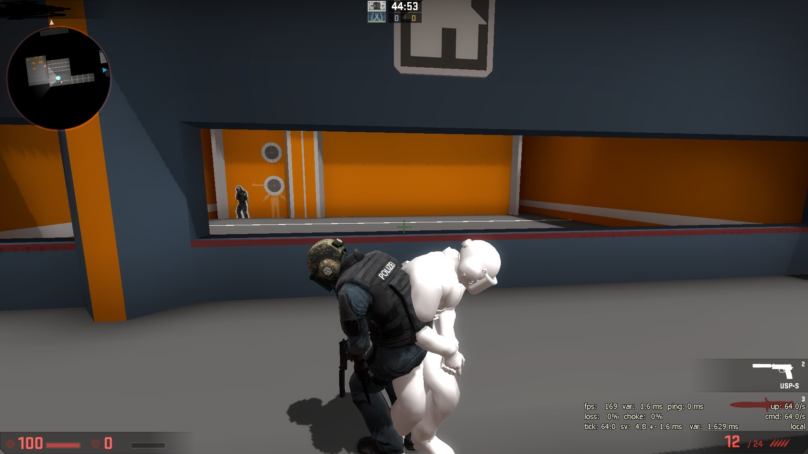

CS:GO (Counter Strike: Global Offensive) is a competitive 5 vs 5 team-based game that was initially released in 2012. The game was created by Valve® (a popular game designing company).

The game has a large community that is still growing. However, due to the game being very competitive, the game is a large market for cheats as they can give the player a major advantage in the game. Meme Hook is the best free cheat currently in the market!
Meme Hook has been in the CS:GO cheat market since 2012 when the game was released. For the past 7 years Meme Hook has out-competed other cheats on the market due to its precision and the variety of features that it has. On this website you will learn about the features that Meme Hook has and also how to download and use Meme Hook.
Legit Hacks are features in Meme Hook that give you can advantage over other players while not making it obvious that you are cheating.
Rage Hacks are the opposite of Legit Hack features as they are very blatant. When using Rage Hack features, you are at a high risk of being banned by the Valve®’s anti-cheat systems. We recommend using Rage Hacks only when playing against other cheaters.
Although we regularly update Meme Hook to prevent our cheat from being detected by VAC (CS:GO’s automated anti-cheat system), we still cannot guarantee that you will not be banned. It is up to you as the user to take responsibility for what happens to your own account. We are not responsible for any lost in-game purchases such as skins. If you want to learn more about VAC, you can visit Valve®’s official website on their own anti-cheat systems.

All of the features are made accessible in a toggle-based menu where you can activate and disable certain features just by clicking on the check boxes.
ESP (Extra Sensory Perception) hacks are cheats which allow you to know things that the game does not allow you to know. Most ESP hacks (such as wall hacks and radar hacks) allow you to know the exact location of your enemies even when they are hiding behind obstacles. Since the maps in CS:GO are relatively complex and the amount of players in each team is small, knowing the location of your enemies can be extremely beneficial to plan out a strategy or shoot through a thin obstacle that an enemy player is hiding behind.
Once wall hacks are activated, you can see enemy player models through obstacles. These models are also indicated by a glow to increase visibility.
Wall hacks are the most common ESP hack however there are also other hacks which enhance your in-game perception. We will go over a few other ESP hacks that Meme Hook has.
The normal radar tool in CS:GO allows you have a general sense of where you and your team-mates are located on the map. The location of enemy players is not displayed. However with radar hacks, enemies will be indicated on the radar by red dots.
The player indicators are the small arrows at the top of the screen pointing to the general direction of enemy players. They are useful for knowing if an enemy player is trying sneak up behind you or if they are just around the corner. Unlike wall or radar hacks, player indicators do not show the precise location of an enemy player.
FOV hacks are the most simple and subtle ESP hack as all they do is increase the field of view of your first-person camera.
Not to be confused with aim-bot, trigger-bot is bound to a certain key on your computer or button on your mouse. Once this button/key is pressed, the trigger-bot will automatically fire if it detects an enemy player model within your crosshair.
The crosshair is a reticule in the center of your screen which shows the direction of your shots. When the button/key bound to your trigger-bot is held down and there is an enemy within your crosshair, you will automatically fire. This allows you to gain an edge over other players because you can react and fire faster than them. At the same time you are able to be subtle so people will not call you out for cheating.
As we can see here, this player uses a trigger-bot to pull off a shot that would normally be very hard to do. However, at the same time the player is able to look "legit" so that no other players would suspect that they are cheating.
Normally, jumping will slow your forward movement as more of your velocity is focused upwards. More experienced players in CS:GO place a series of perfectly timed jumps to travel faster in the game. However this requires a lot of practice. With our bunny-hop hacks, you will not have to worry about carefully placing your jumps as this feature will do it for you. You can use bunny-hop hacks to chase down an enemy player, reach an objective in the map, or just to impress your friends.
Another advantage of bunny-hopping it that it allows you to dodge bullets easier when you are chasing enemy players.
Unlike the other features we have gone over so far, aim-bot is not a "legit" feature as it is not subtle. Once the aim-bot feature is activated, it will lock on to enemy players and fire. This takes away the need for you to aim by yourself. Your player model will create a sudden flicking motion when the aim-bot locks onto other players.
As you can see, the aim-bot can quickly eliminate one player and then lock of enemy player models as most of the time, a shot in the head would result instant elimination. However you can also customize Meme Hook’s aim-bot to aim for the body in certain conditions if you want to.
Anti-aim repositions the hit-boxes of your player model in order to make you harder to hit. Hit-boxes are the way most video games will decide what areas are valid to hit on the player model. Games like CS:GO take this too one step further and have multiple hit-boxes on a player model. Each hit-box will yield a different amount of damage.

Different hit-boxes yield different damages. The feet yield the least, the chest and torso yields moderate damage and the head yields the most. Most of the time shooting the head of a player model will cause enough damage to eliminate them in one shot. This is why aim-bots automatically target the heads of player models.
By switching up the hit-boxes with anti-aim, you can switch the damage that your player model's head would normally yield with your foot and your foot could yield the damage from your head. Since most players are used to aiming for the head, they will do less damage to you as they are really just shooting your foot. This will also give you an advantage in HvH (Hack versus Hack) games as aim-bots will also shoot at your head only to deal the amount of damage that would normally be done to your foot. Anti-aim will also make your player model harder for aim-bots to hit by making your player model rapidly spin or jitter.
Here is an example of a player model spinning when anti-aim is activated.
Fake angles are a new anti-aim feature that we have added to Meme Hook. Fake angles create a fake player model that faces the opposite direction of your real player model.
The fake model is indicated by a glow however, the glow is only for you to distinguish between the real and fake model. Your opponents will confuse the fake model as your real model and shoot at it but they will do no damage. The fake angles can even trick aim-bots into firing at the fake model.